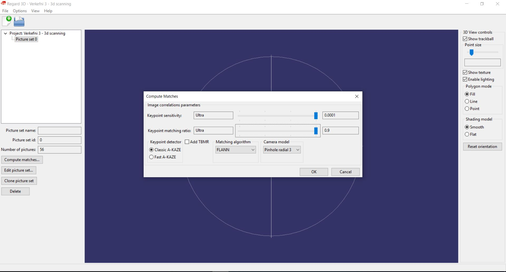

For this assignment the goal is split into two parts, first to draw and 3D print something that could not be manufactured
using subtractive manufacturing methods like milling og turning. The second part of the assignment is to 3D scan something.
To start with I needed an idea for what I wanted to 3D print, I started looking through google and example from fabacadamy students
and found some interesting ideas:
I started looking online for wire fasteners or ways to hide them but then I thought what if I could use this project to clean up the wires. I opened Inventor and started drawing a basic hook shape kind of like what I wanted the final hook to look like.
 I was not completely happy with the spline so I started dragging the control points around to change the shape of the hook, I decided that to be able to
comfortably put wires onto the hook I would need a gap of around 8mm I also wanted to have the end of the hook at around 16mm from the base as I decided
to have the base thickness of the hook 8mm and then taper down to 3mm, that would give me 8mm of clearance at the side of the base.
I was not completely happy with the spline so I started dragging the control points around to change the shape of the hook, I decided that to be able to
comfortably put wires onto the hook I would need a gap of around 8mm I also wanted to have the end of the hook at around 16mm from the base as I decided
to have the base thickness of the hook 8mm and then taper down to 3mm, that would give me 8mm of clearance at the side of the base.
I wanted more control of the shape so I added extra control points by right clicking on the spline and selecting "insert vertex", now I had a shape that I liked. I created two new planes at either end of the spline by using the plane command and clicking the endpoint of the spline and then the spline itself, that creates a plane that is alway perpendicular to the spline. I also changed the extra lines that I was using for spacing to construction lines.
I then created a circle that had a diameter of 8mm at the base of the spline that would be used as the profile of a sweep command, I also drew a circle at the end of the spline that had a diameter of 3mm.
I wanted to use the sweep command between the two circles following the path of the first sketch but after searching around google for a while I could not find a method that worked, because the hook does not have to be very acurate I decided instead to manually input a taper to the sweep and try to align the diameter of the end of the sweep to the 3mm circle sketch.
Now that the hook was ready I needed to draw the base, I decided to have the base 25x40mm, that would give me enough room to position holes for screws. I created a sketch plane on the bottom of the hook and drew two circles with a diameter of 25mm and constrained the centers to the x-axis and constrained the distance between the centers as 15mm. I then drew two lines that were parallel to the x-axis and 15mm long, I then used the tangent constrain to constrain the lines to the circles.
I then used the trim tool to trim off any extra lines inside the base.
After extruding the base the next step was to add the fastening holes. I created a sketch on top of the base and inserted points where I wanted the holes to be.
I then used the Hole tool to create the holes, I wanted to have 4 hooks in total, two under my desk and two running down the wall so I will be fastening two hooks with wood screws and two with concrete nails, I decided to have countersunk holes with top radius of 3mm and the hole radius as 2mm as the hooks will not need to hold heavy items. I selected the points I had put into the previous sketch and was very happy with how it looked.
I finally added some fillets to the base so that it would be more comfortable when installing.
Now that the drawing was complete I exported it as an STL file. I then imported that file into Ultimaker Cura.
As can be seen the drawing is to small, but after rotating the drawing so the base plate is at the bottom I noticed that the proportions of the drawing were correct, but the scale was not. This was easily fixed by clicking on the model, selecting the second tab on the menu to the left and changing one of the sizes to the correct size, amking sure to have uniform scaling selected. This scaled the model up by 1000% so the most likely explanation is that it was a simple unit conversion misunderstanding between Inventor and Cura.
Now that the model was correct the next step was to slice the model. I started by using the reccomended setting but changing the layer height to 0.15mm instead of 0.2mm to make the model a bit more sturdy and clean.
This probably would have worked well but I wanted to make some changes to the settings, by clicking on the "Custom" button in the bottom right corner of the settings I was able to change most settings. I started by making sure that the "Generate Support" box was ticked, as the part would not print properly without supports. I then changed the "Support Overhang Angle" to 40° which is a bit low but I wanted to make sure that there would not be problems while printing the part.
Next I changed the infill settings, the base needs to be pretty strong to be able to hold the nails and screws and the hook also has a fairly small diameter so I would need a lot of material to make sure that it is strong so I changed the infill settings to 70% infill density.
I then changed the "Wall Line Count" setting to 5, as some parts would be held in place by screws I wanted to make sure that the threads of the screws would not cut through the walls of the holes.

Now I was happy with the settings so I went back to the prepare section of Cura at the top center of the screen and multiplied my model 3 times so that I had 4 hooks.
Now the file was ready to print, before printing all 4 hooks I decided to print 1 hook to make sure that everything was okay, that
way if I found I needed to change the shape of the hook, or the spacing between the end of the hook and the base or anything else
I would not have wasted 3 hours and some material printing 3 extra hooks that would be useless.
I saved the file as a gcode from Cura and put the file onto a USB drive, I then put the USB drive into the Ultimaker 3 printer and found the file and started printing.
After about an hour the first hook was ready, it came out fantastic.
After looking at the hook I was not as pleased as I had hoped, the fastening holes were to small and it was a bit of an overkill to use 3 holes. I decided to go back to the drawing and change the shape of the hook to make it a bit slimmer, I also lowered the height of the hook a bit.
Now I had a bit more space to work with for placing fastening holes, I went back to the sketch with the points for the hole placement and added a point in front of the hook.
I then edited the hole feature and made the holes bigger and took out the holes at the side of the hook.
Now the second version of the drawing was ready

I exported the file again as an STL file and imported into Cura, making sure to use the same settings as before. Now however the Ulimaker printer was working
on another job so I needed to use the Prusa I3 Mk3S printer. Cura does include support for Prusa I3 printers but Prusa does supply everythign needed to add them into
Cura. I followed this tutorial,
Impot Prusa profiles into Cura
, to add the profiles.
I first opened C: -> Program Files -> Ultimaker Cura 4.3 -> resources
I then downloaded the .zip file on the website and unzipped it. I then went into Prusa -> Cura_OriginalPrusa_Profiles -> Cura_OriginalPrusa_Profiles -> Cura_4_0_0 -> MK3S_MK3_cura_profiles and there were all the files I needed, neatly sorted into folders.
The first tree folders all have a single file inside that needs to be copied into the respective folder in Cura, so the file in the
01_Cura_printer_definitions is copied into the definitions folder in Cura and so on. Once those three files are in place it is time to open Cura.
Now I needed to add the layerheight profiles and materials into Cura, so I selected Settings -> Profiles -> Manage Profiles.
I then selected the import button and imported all of the profiles in the 04_Cura_layerheight_profiles folder.
I then went into the materials tab and did the same but with the files in the 05_Cura_Prusa_materials folder.
Now I could add the printer by selecting the printer tab, and clicking add printer and selecting the printer under "Prusa research".
With the printer selected and all of the setting like the first time I put the file onto the SD card and started printing. The hook came out like it had been burnt on a couple of places and missed one layer, but after checking Cura again all the layers were there, so it seems that the temperature that I was using was too high.

The temperature was set to 255°C and after a couple of google searches I found this page,
The perfect ABS print and bed temperature,
according to that page ABS plastic like the one I used for the second hook melts at around 210-250°C and the author of the page reccomends using 235°C for the nozzle temperature.
The bed temperature was set to 100°C but as stated on the page the glass transition temperature for ABS plastic is around 105°C and reccomends using a bed temperature of 110°C.
After changing those settings in Cura I tried printing again.
This time the ABS plastic did not burn and came out very nice! After talking with Arnar about the burned part he told me that the ABS that I used was almost 3 years old and had lost most of its moisture so that probably had some effect on the outcome as well.
Now the next step was to install the hooks under the table, to make sure that the screws I had did not go through the desk I checked the length of them in relation to the desk and hook.
After installing the hooks and mounting the cables onto them the 3d printing part of the project was finished and I was very happy with the results!
Unfortunately while I was installing the hooks the one that was burned snapped, the burned plastic must have lost a lot of its strength and there was also some sort of error while printing where the hook broke apart.
I have never worked with making a 3D model from a picture set, after hearing from Ívar Dór about his experience using Regard 3D I decided to use that program but I still had no idea what I wanted to 3D scan. While I was helping my classmates at Fablab with Máni we decided to try 3D scanning him, we wanted to see how well you could 3D scan something that was not static with just a basic camera phone and a colorful background. Máni had decided to use Meshroom to do his 3D scanning project, so we also had the idea to use the exact same pictures with the two different programs and compare the results. Here are some examples of the pictures that were used to generate the 3D model, in total there aree 56 pictures but after looking online it would have been better to take around 100 pictures.
Once I had taken the pictures I had no idea what to do with them, luckily Ívar also told me about a good tutorial from the creators of Regard 3D, Regard 3D tutorial, which goes through the exact steps needed to make a 3D model from a picture set. The first step is to import the pictures, this is done by clicking the "Add Picture Set..." button then "Add Files..." and then selecting all the pictures that you want to use for the picture set.
The next step is to compute matches from the picture set. This is done by making sure that the picture set is selected and clicking on "Compute matches...", this looks at all the pictures and finds matches between them that the program can use to compute a mesh from. The tutorial reccomended moving both sliders fully to the right for smaller picture sets, so I used those settings.
The next step is to triangulate the matches, this is done much the same way that the matches were computed, first make sure that the matches are selected and then click the "Triangulation..." button, the tutorial was a bit outdated for this step but the default setting produced a good point cloud.
To see more points from the point cloud it needs to be densified, this is done by making sure that the triangulation is selected and clicking the "Create dense pointcloud..." these are the settings reccomended for smaller picture sets by the tutorial.
This produced okay results as can be seen in the following picture.
I however tried lowing the level down to 1 and this lead to an even better densification.
This produced even better results.
Now the last step is to connect the points in the point cloud together and create surfaces, this is done exactly like the other steps, I used the reccomended settings and the surface was okay.
After increasing the depth of the surface generation I got even better results.
There was still however a lot of blobs in the air and a lot of the background showing, but Ívar pointed it out to me that the threshold setting could reduce that, he had used a threshold of 8.5 so I started off with that aswell. This produced very nice results.
| Time | Work |
|---|---|
| 2 Hours | Drawing in Inventor and preparing the file for 3D printing. |
| 2 Hours | Learning to use the Prusa 3D Printers and importing Prusa i3 Mk3 into Cura |
| 1 Hour | Starting the 3D printing process |
| 1 Hour | Fastening the hooks under the desk and fixing the cables |
| 1 Hour | Finding a model to scan and taking pictures of the model |
| 4 Hours | Creating a 3D model from pictures |
| 6 Hours | Updating the website |
| 17 Hours | Total time |
diy powerstrip - 3d printing ideas - cool 3d print - 3d printing - Sweep between two circles inventor - Inventor sweep tutorial - Changing radius sweep inventor - ABS filament printing temperature - ABS temperature - ABS filament 3D printing - Regard 3D - Regard 3D tutorial - Regard 3D bad lighting - Working with mesh inventor -